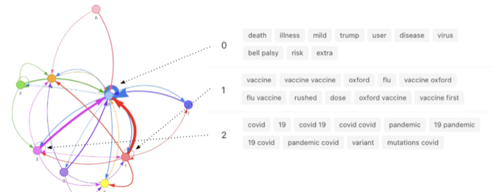
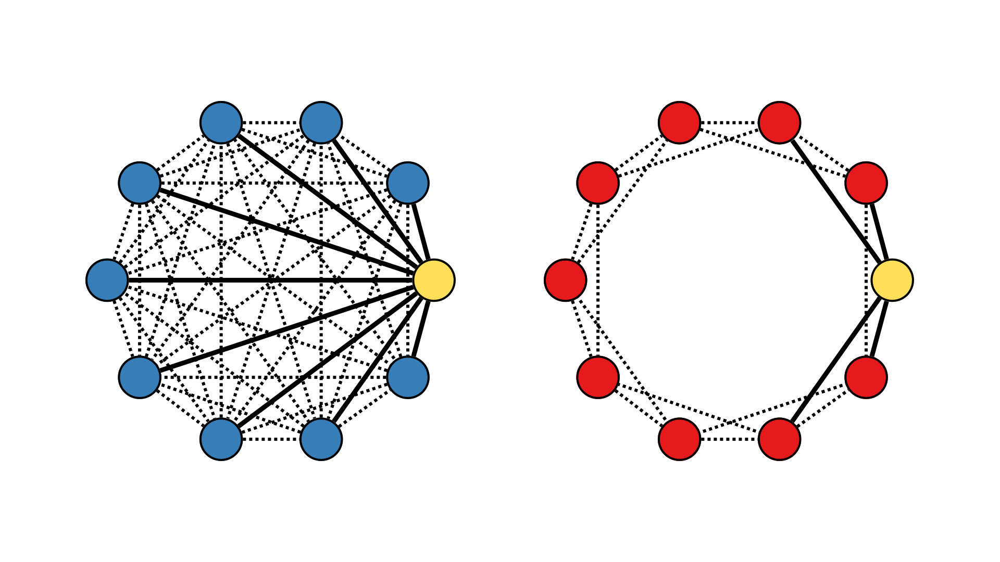
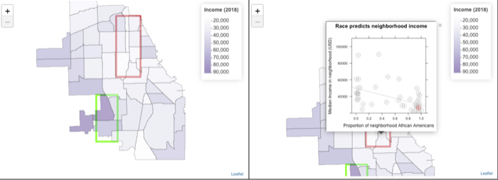
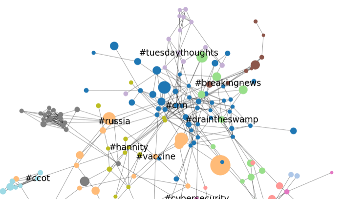
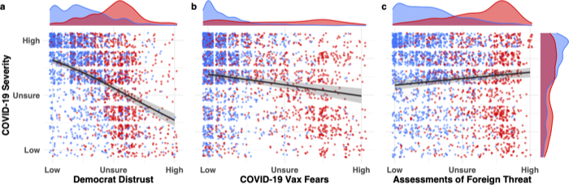
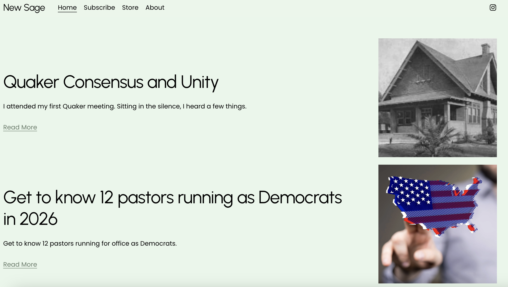
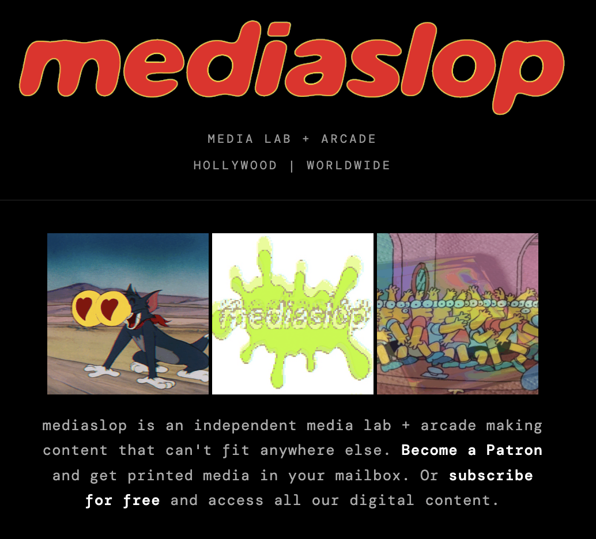

Research Portfolio
My research focuses on how psychological mechanisms and computer algorithims interact to shape narrative agency, internet communication, and group dynamics. I integrate a variety of methods from psychology experiments on individuals and networked groups, computational models of human behavior, AI software development, and large-scale analyses of social media. Each project card highlights the hypotheses, methods, and findings of my core research themes. A complete list of academic publications is on my Google Scholar.

How shared narratives emerge in decentralized online networks. Network topology and narrative complexity jointly determine whether groups converge or fragment.

Developed an LLM-based pipeline to extract and visualize belief systems from natural language, applied to Covid-19 vaccine tweets.

Social network experiments reveal how network structure and interaction media shape the emergence of shared narratives and language change.

Data mined from online discussions, psychology experiments, and data visualization integrated to develop and evaluate persuasive educational interventions.

Data science studies on political belief and narrative dynamics on social media using data mining, NLP, and network science.

Longitudinal surveys over 2,000 participants show how preexisting distrust in politicians and medical science shaped COVID-19 skepticism.

Interdisciplinary research on religion as a system of narrative, belief, and community building — applying data science, urban design, and cognitive psychology.

Creative technology and media art project applying psychological and media theory in real-world digital environments. Home of the Arcade and Peepshow.